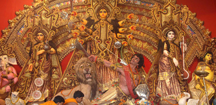

Holidays and Celebrations

Coming Together
A family reunion is always a cause for celebrations, especially in my family. Aunts, uncles and cousins from around the world come together for various occasions to reconnect and enjoy each other's company. My parents and I visit my relatives in Bangladesh and India every few years to attend religious holidays and weddings. Celebrating our shared culture binds us together.
Durga Puja
Durga Puja is one of the holiest Hindu festivals and consists of ten days of celebrations. It signifies the coming of the goddess Durga to Earth every year. On the last day, the statue of Durga would be sunk into a lake to show her returning to Heaven. Back when most of my family still lived in Bangladesh, we used to all return to our village and spend the week enjoying the festivities.

Weddings
Weddings are always a fun time to be in Bangladesh. Big marching bands play as the bride and groom are brought to the event hall where a brahmin conducts the wedding rituals. After that, it comes a party until the morning. The weddings of my cousins have been a way for my family to come together to reconnect and have a fun time. Each time, someone new joins the family.